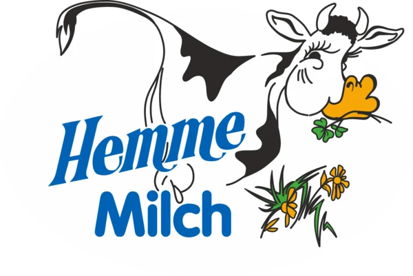

Die neue Startseite.
Zwei Richtungen.
Ein erster Entwurf der Startseite, direkt im Code statt als Skizze. Beide Richtungen nutzen dieselben Inhalte, damit der Unterschied in der Gestaltung sichtbar wird. Unterseiten, Texte und Funktionen entstehen nach der Entscheidung für eine Richtung.
Farben und Schriften sind vorläufig, bis das neue Brandbook da ist. Gelb markierte Stellen muss Hemme noch bestätigen.
Entwurf von NEXAS Media · nicht für Suchmaschinen · Stand 01.10.2026